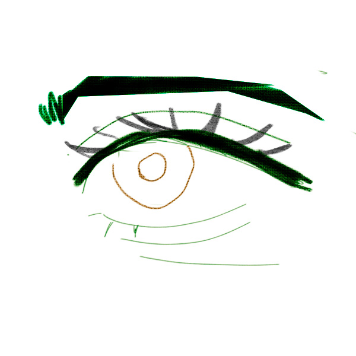

original eye

I chose the color blue and orange to represent a somber hope. Blue often represents very somber and mellow feelings. While orange represents enthusiam. I think my eye doesn't express any emotion that is specifcally very outward but I wanted to convey the simplicity of hope.